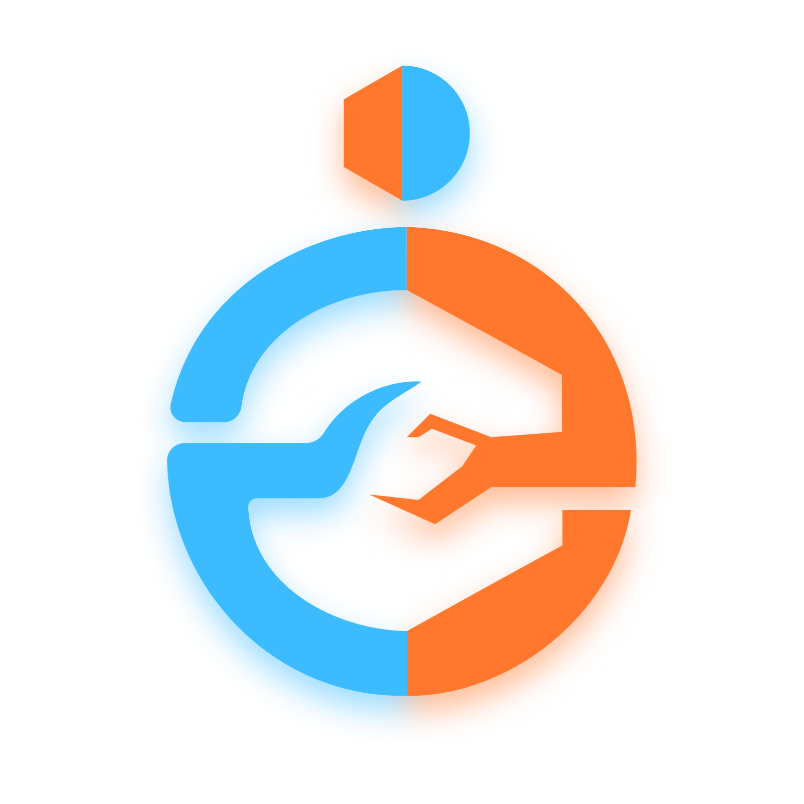
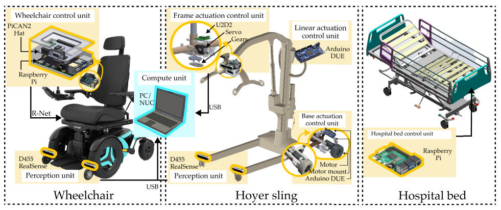
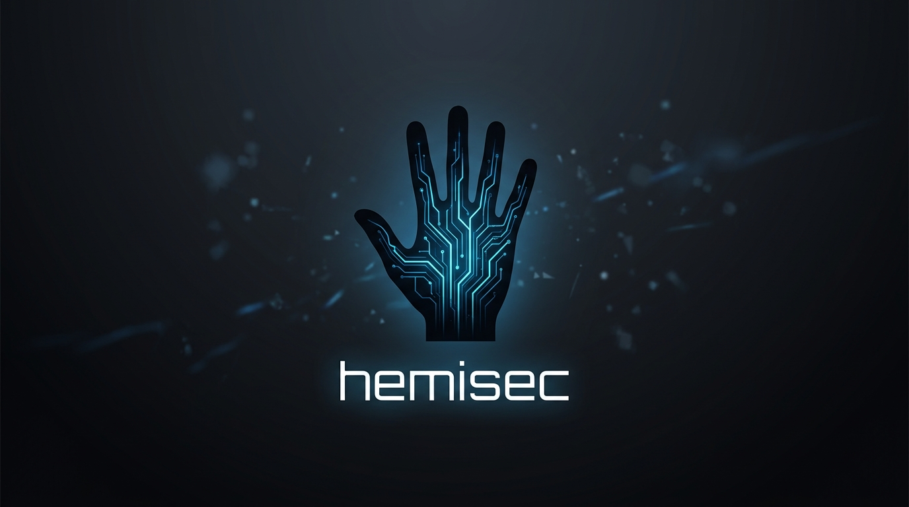

Gavin Chen
Computer Science Undergraduate | Cornell University
Welcome! I’m a senior undergraduate majoring in Computer Science at Cornell University with a strong passion for robotics and perception. I’ve worked on robotic caregiving and simulation-based benchmarking for assistive manipulation and physical human–robot interaction. I’m currently interested in efficient policies for robot manipulation, especially fast, robust generative policies for control, and also high-fidelity simulation and benchmarking for robotics.
Experience
Full-Stack Robotics Intern
Budbreak Innovations
San Francisco, CA
- Built a cloud data pipeline that ingests raw robot scans and, on every upload, automatically processes, GPS-tags, and runs them through trained detection models, distributing inference across on-demand GPU and CPU compute and auto-resuming failed jobs to reliably handle datasets of tens of thousands of images, cutting processing turnaround by roughly 80%.
- Built and field-deployed scanning robots, assembling and wiring the platforms, integrating onboard NVIDIA Jetson Orin compute with a multi-camera rig, and running vineyard scans to debug and iterate on the hardware in the field.
- Contributed to the customer-facing platform that turns raw model outputs into actionable analytics, letting clients explore insights on their field data including vine inventory, disease detection, and mapping.

AI Architecture/Software Engineer
Clarke
New York, NY (Remote)
- Engineered a multi-stage autonomous agent orchestration pipeline for high-fidelity extraction from utility filings, regulatory dockets, and operator disclosures, implementing a deterministic source-ranking algorithm and a semantic Document Vault that ensures 90% data consistency across asynchronous runs.
- Architected a custom RAG (Retrieval-Augmented Generation) engine utilizing multi-query retrieval and hybrid search to process complex compute-infrastructure filings, reducing LLM API overhead by 40% through intelligent batching and token-limit management.

Teaching Assistant — CS 4750: Foundations of Robotics
Cornell University
Ithaca, NY
Undergraduate Researcher
Cornell EmPRISE Labs
Ithaca, NY
- Developed and refined datasets for computer vision and action recognition, including work on OpenRoboCare (IROS 2025) — a multi-modal, multi-task expert demonstration dataset capturing 315 sessions and over 31k samples of occupational therapists performing 15 ADL tasks. Data spanned RGBD video, full-body pose, eye gaze, tactile sensing, and detailed action annotations, enabling diverse benchmarks for perception and activity recognition models.
- Co-organized the Physical Robotic Caregiving Competition, which drew over 50 participants from multiple institutions. Designed both the simulation phase in RCareWorld and the real-robot phase, creating long-horizon assistive dressing and bed-bathing tasks that require complex manipulation, perception, and safe human-robot interaction.
- Helped maintain and improve the RCareWorld simulation codebase by streamlining APIs, restructuring modules, improving documentation, and fixing environment stability issues so users can reliably develop and test robot policies.
Engineering Intern
H2M Architects and Engineers
Parsippany, NJ
Publications
RAG-Diff: Adapting Diffusion Policies to Dynamic Constraints with Retrieval-Augmented Guidance
Ruolin Ye, Nayoung Ha, Shuaixing Chen, Qiandao Liu, Gavin Chen, Shaoyang Stassen, Mark Zolotas, Jose Barreiros, Tapomayukh Bhattacharjee. Robotics: Science and Systems (RSS), 2026.
Projects
Robotic Assistive System for Human Transfer

Architected a fully autonomous patient transfer system integrating proxy-perception and diffusion-policy grasp planning to localize and manipulate non-rigid sling hardware with sub-centimeter precision. Designed custom embedded control loops (Arduino/RPi) for retrofitted medical hardware, implementing hardware-level safety overrides and achieving a 97% autonomous success rate (up from 55%).
Fast Goal-Conditioned Diffusion Policy (FGDP)
Formulated a rectified-flow diffusion policy for robotic manipulation that decouples inference latency from generation quality, introducing a tunable K-step knob to optimize the real-time accuracy–latency frontier. Outperformed baseline diffusion models in low-latency regimes (K=1) by enforcing trajectory smoothness during training, validating superior action-chunk consistency across high-dimensional control tasks.
HemiSec (NIR Biometric Authentication)

Designed a hardware-software NIR imaging pipeline for palm-vein biometrics, implementing a CV stack including Otsu-based segmentation, distance-transform "safe masks," robust illumination correction, and a Gabor filter-bank feature descriptor with spatial grid pooling for lighting-invariant matching.